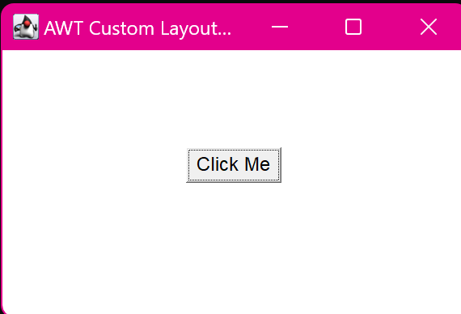

2. Create a simple AWT application that displays a button with Custom Layout.
import java.awt.*;
import java.awt.event.*;
class CustomLayout implements LayoutManager {
public void addLayoutComponent(String name, Component comp) {}
public void removeLayoutComponent(Component comp) {}
public Dimension preferredLayoutSize(Container parent) {
return new Dimension(300, 200);
}
public Dimension minimumLayoutSize(Container parent) {
return new Dimension(200, 150);
}
public void layoutContainer(Container parent) {
// Custom layout: For example, placing the button in the center
int width = parent.getWidth();
int height = parent.getHeight();
Component button = parent.getComponent(0);
int x = (width - button.getPreferredSize().width) / 2;
int y = (height - button.getPreferredSize().height) / 2;
button.setBounds(x, y, button.getPreferredSize().width, button.getPreferredSize().height);
}
}
class main {
public static void main(String[] args) {
Frame frame = new Frame("AWT Custom Layout Example");
Button button = new Button("Click Me");
// Use the custom layout
frame.setLayout(new CustomLayout());
frame.add(button);
frame.setSize(300, 200);
frame.setVisible(true);
frame.addWindowListener(new WindowAdapter() {
public void windowClosing(WindowEvent we) {
System.exit(0);
}
});
}
}
